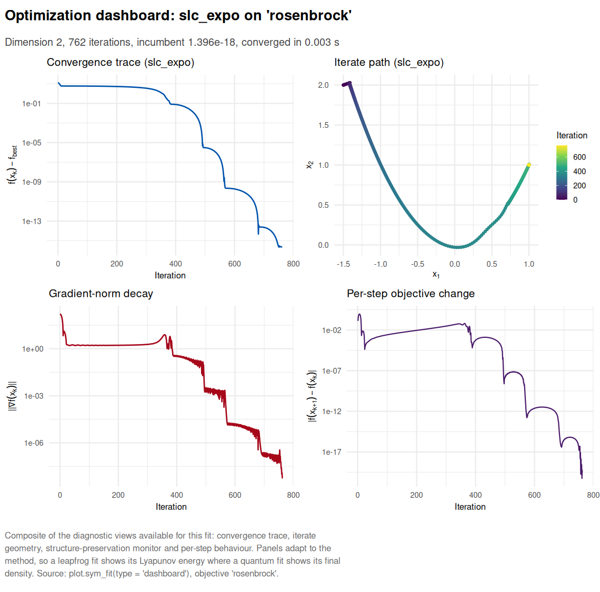
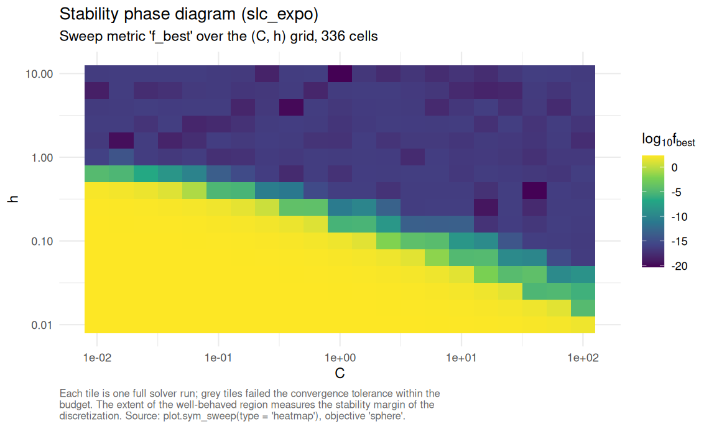
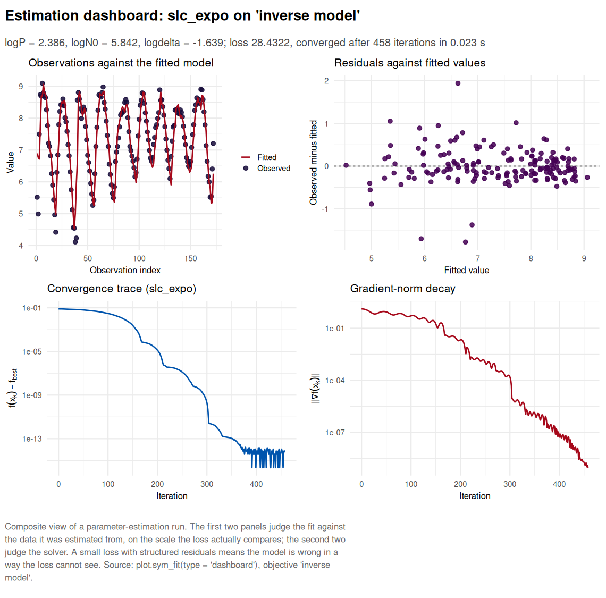

Symplectic and accelerated gradient methods implemented as structure-preserving discretizations of continuous dissipative Hamiltonian systems. symplectoR treats optimization as physics: every solver integrates a damped Hamiltonian flow whose Lyapunov function is the objective, and the discretizations preserve the geometric structure (symplectic, conformal symplectic, presymplectic) that controls long-run stability. The practical payoff is stability at much larger step sizes than the classical Nesterov discretization at the identical cost of one gradient per iteration, plus a family of safeguards (momentum restarting, temporal looping, relativistic step bounds) that convert the theory into robust default behaviour.
The three method families
The package implements three complementary kernels behind one interface, sym_optim().
Family A, conformal symplectic. The starting point is the mechanical system with friction,
\[\dot x = \nabla_p H(x, p), \qquad \dot p = -\nabla_x H(x, p) - \gamma p, \qquad H(x, p) = \frac{\lVert p \rVert^2}{2m} + f(x),\]
whose flow contracts the symplectic form at an exactly known rate, \(\omega_t = e^{-\gamma t} \omega_0\). Polyak’s heavy ball is precisely the conformal symplectic Euler discretization of this flow under \(\mu = e^{-\gamma h}\) and \(\varepsilon = h^2 / m\), while Nesterov’s method integrates the same flow without preserving the contraction [1]. Replacing the kinetic energy by its relativistic form \(c\sqrt{\lVert p \rVert^2 + m^2 c^2}\) bounds the velocity, \(\lVert \dot x \rVert < c\), which in the package parameterization \((\varepsilon, \mu, \delta, \alpha)\) becomes a per-half-kick displacement bound \(1/\sqrt{\delta}\): a trust region derived from the physics rather than bolted on. The master kernel "rgd" subsumes "nag", "heavy_ball" and "cm" exactly as parameter settings; "leapfrog" integrates general damping schedules in the overflow-safe form of [2] and preserves the continuous rate up to \(O(h^r e^{-\eta})\).
Family B, Bregman. The variational framework of [3] derives every accelerated method from one Lagrangian, whose Hamiltonian in the Euclidean separable case is
\[H(q, r, t) = \tfrac{1}{2} e^{\alpha_t - \gamma_t} \lVert r \rVert^2 + e^{\alpha_t + \beta_t + \gamma_t} f(q),\]
with rate \(f(q_t) - f^\star = O(e^{-\beta_t})\) under the ideal scaling conditions \(\dot\beta_t \le e^{\alpha_t}\) and \(\dot\gamma_t = e^{\alpha_t}\). The polynomial subfamily gives \(O(1/t^p)\) and the exponential subfamily \(O(e^{-\eta t})\). "slc_poly" and "slc_expo" are the fully explicit symplectic leapfrog compositions of [4] with gradient momentum restarting (speedups of one to three orders of magnitude in the source study) and temporal looping, which stops an otherwise fatal post-convergence blow-up intrinsic to the growing Hamiltonian coefficients; "wibisono" is the rate-matching three-sequence scheme with its explicit estimate-sequence certificate.
Family C, quantum. Canonical quantization of the same Bregman Hamiltonian replaces the momentum by \(-i\nabla\) and yields
\[i \, \partial_t \Psi(t, x) = \left[ \frac{1}{\lambda(t)} \left( -\tfrac{1}{2}\Delta \right) + \lambda(t) f(x) \right] \Psi(t, x),\]
integrated by split-step Fourier simulation on classical hardware [5]. "qhd" is a zeroth-order global method that queries only function values, carries a rigorous global-convergence guarantee for merely locally Lipschitz objectives, and is practical up to three dimensions, where the state occupies \(N^d\) grid cells.
Quick start
Every solver consumes the same currency, a sym_objective, and returns a rich S3 object with a print, summary and plot method. The "dashboard" plot view assembles the diagnostics that apply to the particular fit into one figure.
library(symplectoR)
bm <- sym_benchmark("rosenbrock", d = 2)
fit <- sym_optim(sym_objective(bm), x0 = c(-1.5, 2), method = "slc_expo",
control = sym_control("slc_expo", C = 0.1, h = 1, max_iter = 4000),
keep_path = "full")
fit
#> ¡ symplectoR fit (slc_expo)
#> ⚙ Objective: rosenbrock (dimension 2)
#> ✔ Best value: 1.3964e-18 after 762 iterations
#> ✔ Status: Converged
#> ¡ Evaluations: 764 objective, 763 gradient
#> ⏱ Wall time: 0.003 s
plot(fit, type = "dashboard")
Compiling the objective removes the R interpreter from the inner loop and unlocks every OpenMP path: multi-start ensembles, parameter sweeps and the quantum grid. The sweep below runs one complete solver per grid cell and maps the region of the \((C, h)\) plane in which the discretization is stable, which is the quantity the tuning literature reports and the one that transfers between problems.
co <- sym_compile("return 0.5 * arma::dot(x, x);", "return x;")
objc <- sym_objective(co, dim = 50, name = "sphere")
sw <- sym_sweep(objc, "slc_expo",
grid = list(C = 10^seq(-2, 2, 0.2), h = 10^seq(-2, 1, 0.2)),
x0 = rep(3, 50), n_threads = 8)
sw
#> ¡ symplectoR sweep (slc_expo over C, h)
#> ⚙ Objective: sphere; grid size 336
#> ✔ Converged: 166; diverged: 0; success at tol 1.0e-06: 166
#> ✔ Incumbent cell: C = 1, h = 10 with f = 4.90339e-21 in 49 iterations
#> ⏱ Threads: 8; wall time: 0.008 s
plot(sw, type = "heatmap")
Inverse modeling on empirical data
sym_inverse() turns a model and a dataset into an objective over the parameter vector, by direct prediction or by trajectory matching of a janos dynamical system. Two empirical ecological series ship with the package. Below, the delayed-recruitment model of Nicholson’s blowfly cages is estimated by conditional one-step-ahead prediction: a quantum global scan maps the whole three-parameter box, and a symplectic method refines its incumbent.
main <- subset(nicholson_blowfly, population == "main")
N <- main$count
k <- 7L # 7 sampling steps x 2 days = the 14-day development delay
idx <- seq.int(k + 1L, length(N) - 1L)
predict_step <- function(theta) {
log(exp(theta[1]) * N[idx - k] * exp(-N[idx - k] / exp(theta[2])) +
N[idx] * exp(-exp(theta[3])) + 1)
}
obj <- sym_inverse(predict_step, data = log(N[idx + 1L] + 1),
theta_bounds = list(lo = c(logP = log(0.05), logN0 = log(50), logdelta = log(0.005)),
hi = c(logP = log(50), logN0 = log(20000), logdelta = log(3))))
global <- sym_optim(obj, method = "qhd", seed = 1,
control = sym_control("qhd", N_grid = 48, K = 1200))
refined <- sym_optim(obj, x0 = global$x_best, method = "slc_expo",
control = sym_control("slc_expo", C = 0.1, h = 1.5,
max_iter = 3000, tol_grad = 1e-9))
round(exp(refined$x_best), 4) # recruitment P, scale N0, per-step mortality delta
#> logP logN0 logdelta
#> 10.8686 344.5695 0.1942
plot(refined, type = "dashboard")
Validation
Every solver is validated against analytic ground truth before any claim is made. The dissipative leapfrog reproduces the closed-form damped-oscillator and Bessel-function trajectories of the reference study with observed error ratios of exactly 4.00 under step halving (second order); the relativistic kernel reproduces hand-coded Nesterov and heavy-ball iterations to machine epsilon; the Wibisono scheme satisfies its estimate-sequence bound at every recorded iterate; the temporal-looping ablation reproduces the published blow-up pathology (divergence to infinity after convergence on a fixed budget) and its cure; the quantum engine preserves unitarity to machine precision and recovers the published global minima of the 12-function non-smooth suite; multi-start ensembles are bit-identical across thread counts; and the empirical blowfly estimation above agrees with an L-BFGS-B reference on the identical objective to eight significant figures. The test suite encodes each of these checks as a regression test.
Ecosystem
symplectoR is part of the RElab ecosystem. It delegates dynamical-systems simulation to janos (trajectory matching dispatches on system_spec), deliberately does not duplicate the quasi-Newton, trust-region and derivative-free local optimizers of lucifer, and offers as_incumbent_solver() as a drop-in local-descent adapter for box-constrained global searches such as the stiff inverse subsystem of RElabverse.
Disclaimer
This package is the original creation of the author in all conceptual, theoretical, and design aspects. Implementation was assisted by Anthropic’s Claude Code v.2 (Opus 5) and OpenAI’s Codex (ChatGPT 5.6 Sol) to streamline package development. All original ideas, creativity, and scientific contributions belong to the author, who maintains full responsibility for the package’s correctness and reliability. All the code has been thoroughly tested, and users are encouraged to report any issues through the package’s issue tracker.
References
[1] Franca, G., Sulam, J., Robinson, D. P., & Vidal, R. (2020). Conformal symplectic and relativistic optimization. Advances in Neural Information Processing Systems, 33, 16916-16926. https://proceedings.neurips.cc/paper/2020/hash/c4b108f53550f1d5967305a9a8140ddd-Abstract.html
[2] Franca, G., Jordan, M. I., & Vidal, R. (2021). On dissipative symplectic integration with applications to gradient-based optimization. Journal of Statistical Mechanics: Theory and Experiment, 2021(4), 043402. https://doi.org/10.1088/1742-5468/abf5d4
[3] Wibisono, A., Wilson, A. C., & Jordan, M. I. (2016). A variational perspective on accelerated methods in optimization. Proceedings of the National Academy of Sciences, 113(47), E7351-E7358. https://doi.org/10.1073/pnas.1614734113
[4] Duruisseaux, V., & Leok, M. (2023). Practical perspectives on symplectic accelerated optimization. Optimization Methods and Software, 38(6), 1230-1268. https://doi.org/10.1080/10556788.2023.2214837
[5] Leng, J., Zheng, Y., Jia, Z., Fan, L., Zhao, C., Peng, Y., & Wu, X. (2025). Quantum Hamiltonian descent for non-smooth optimization. arXiv preprint arXiv:2503.15878. https://doi.org/10.48550/arXiv.2503.15878
[6] Betancourt, M., Jordan, M. I., & Wilson, A. C. (2018). On symplectic optimization. arXiv preprint arXiv:1802.03653. https://doi.org/10.48550/arXiv.1802.03653